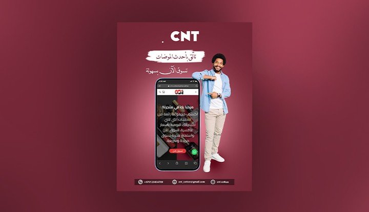

أهمية التصميم البسيط والمنظم في صفحات الويب
كتبته: إسراء عمر معمر | التاريخ:
كطالبة نظم معلومات ومصممة جرافيك، لاحظت أن بساطة التصميم في أي موقع هي أول شيء يجذب انتباه الزائر. عندما تكون الصفحة مرتبة والألوان مريحة، يستطيع أي شخص تصفح الموقع والوصول لما يريد بكل سهولة.
اختيار الألوان والخطوط المريحة
من خلال عملي في التصميم، أرى أن تناسق الألوان واختيار خط واضح للقراءة أهم من كثرة الزخارف. الخط البسيط وحجم الخط المناسب يساعد الزائر على قراءة النصوص الطويلة دون أن يشعر بالتعب.

دمج الصور والفيديوهات لشرح الفكرة
إضافة صورة مناسبة أو مقطع فيديو قصير يساعد على توضيح فكرة الموضوع بشكل أسرع من الكلام المكتوب فقط، ويعطي الصفحة شكلاً حيوياً وتفاعلياً.
فيديو تعليمي: مقدمة في لغة HTML للمبتدئين
في النهاية، الهدف الأساسي من أي صفحة ويب هو تقديم معلومة مفيدة للمستخدم بشكل بسيط وممتع وسهل الاستخدام.